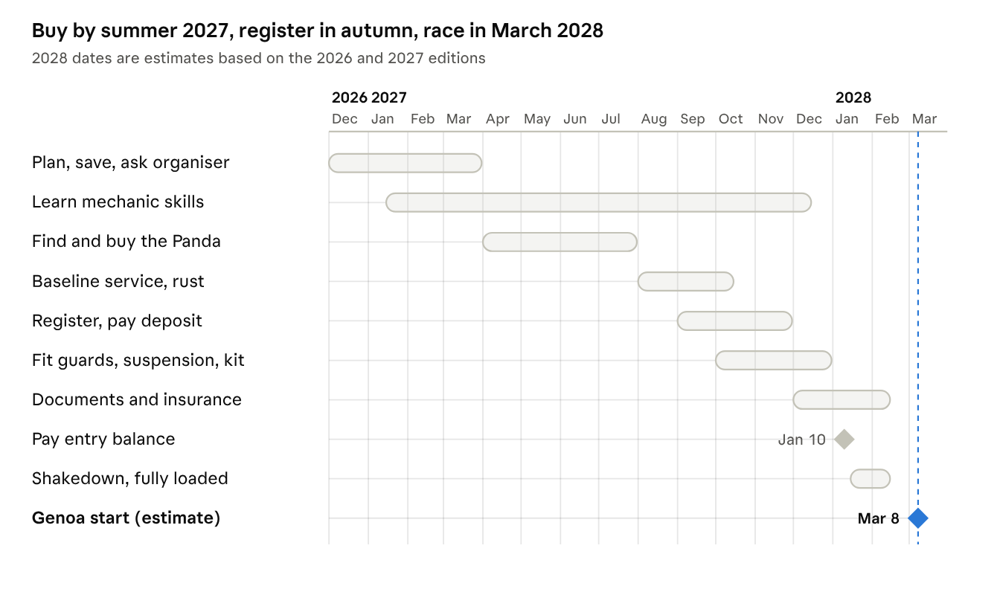

Panda Desert 2028: road to the start line
Summary
Panda Desert is a 10-day raid that starts and ends in Genoa, Italy and runs about 2,100 km through Tunisia, not Morocco. Plan on a UK-registered Panda 4x4 from the 2004 to 2012 generation, an entry fee of about €4,550 per team, and an all-in team budget of roughly £11,000 to £17,500 (estimate).
What is confirmed (official site, read 25 Nov 2026):
- 2026 ran 21 to 30 March and 2027 runs 6 to 16 March 2027. 2028 dates are not published. This plan assumes early to mid March 2028.
- Open to "all Panda 4x4 and Y10 4x4 models", road registered and insured. No roll cage required.
- Entry is capped at 60 teams and closed on 10 January for the 2027 edition. The first 20 teams get €200 off.
- The site is in Italian, there is no charity requirement, and no prepared cars are sold or rented.
The three decisions that shape everything:
- Which car: a 2004 to 2012 Panda 4x4 bought in the UK is the practical pick. The older boxy one is charming, rusty and pricier.
- Where it is registered: keep it UK registered. At Tunisian customs the car is tied to one passport, and that person must bring it back.
- Entry package: option B (ferry included) at €4,550 is the one the organiser recommends.
Anything marked estimate below is a working figure, not a sourced fact.
Event rules and entry
The 2027 rules are the best guide to 2028 until new ones appear. Source: regolamento and its PDF, in Italian.
Format. Ferry Genoa to Tunis La Goulette, 8 days of driving, ferry back to Genoa. The 2026 route went Tunis, Hammamet, Zmela, Tembaine, Douz, Sousse, Tunis (2026 edition). Navigation is by GPX track and roadbook. Skill tests are optional, with prizes for the top 3. Vehicle checks and briefings happen at the port of Genoa.
Entry fees, 2027, per team of two plus car:
| Option | Price | What it adds |
|---|---|---|
| A | €3,600 | Hotels and tent camp on half board, GPX and roadbook, safety cover. No ferry |
| B (recommended by organiser) | €4,550 | A + return ferry for 2 people and the Panda, outside cabin, customs help |
| C | €5,430 | A + single cabins and single hotel rooms |
| Mechanical assistance | €600 | Optional, parts extra. Without it, €50 per hour + parts |
| Photo service | €120 | Optional |
Deposit €1,800 at sign-up, balance by 10 January. Included also: Tunisian SIM, €80 of Tunisian cash, local guide and permits, satellite tracking, basic medical care, recovery to the nearest point a tow truck can reach. Not included: lunches, fuel, ferry meals, towing home.
Mandatory vehicle kit: engine underbody protection, battery isolator switch, 12V USB socket on a direct feed, 20 L jerrycan (empty on the ship), 5 L of drinking water, first-aid kit, 2 kg fire extinguisher, two complete spare wheels, basic tools, torch, shovel, sand ladders, window breaker and belt cutter reachable by both, compressor, jack, heavy-duty tow points front and rear, a tow strap of at least 6 m with shackles. A Garmin-type GPS and a tripmaster app are strongly recommended.
Mandatory crew documents: passport valid 3 months beyond the event, driving licence, a sports medical certificate (Italian-style; see open questions), Green Card insurance valid in Tunisia, V5C logbook, personal travel insurance covering Tunisia with repatriation. Driver at least 18.
Tunisia for Brits: visa-free for up to 90 days (FCDO). Tunisia needs proof of a Green Card, which you request from your UK insurer; if they refuse, you need a temporary policy or border insurance (MIB). FCDO advises against some areas near the Algerian and Libyan borders (regional risks); check the 2028 route against that map, because travelling against advice can void travel insurance.
Timeline
You have about 15 months. The car should be bought by summer 2027 so prep never collides with paying the balance and doing paperwork in the last winter.

- Dec 2026 to Mar 2027: plan. Agree a budget ceiling and how you split it. Email the organiser (in English) about 2028 dates, UK crews and the medical certificate. Follow the 2027 edition (6 to 16 March 2027) for route and breakage lessons. Start an evening maintenance course.
- Apr to Jul 2027: buy the car. First ask your insurer if they will give a Green Card for Tunisia. Then shortlist, get a pre-purchase inspection, buy, and insure with both of you named.
- Aug to Oct 2027: baseline. Full service, cambelt, rust repair, the checks in Car preparation. Drive it daily for a month. Do a 4x4 driving day and a first-aid course.
- Autumn 2027 (estimate): register. Sign up as soon as 2028 entries open to be in the first 20 teams for the early bird. Pay the €1,800 deposit within 5 working days. Note the refund deadlines.
- Oct to Dec 2027: modify and kit up. Guard, suspension, tyres, isolator, tow points, wiring. Work through the Shopping list.
- Dec 2027 to Feb 2028: paperwork. Passports, medical certificates (due at least 1 month before), Green Card, travel insurance, organiser forms. Pay the balance by about 10 January (estimate). Book the Channel crossing and hotels to Genoa.
- Jan to Feb 2028: shakedown. A full weekend on green lanes with everything loaded. Fix what breaks, then pack spares.
- Early March 2028 (estimate): drive to Genoa. Allow 2 to 3 days and arrive a day early for checks at the port.
- Race, then ferry back to Genoa and drive home. Keep the car for another raid or sell it.
Car sourcing
Buy a 2004 to 2012 Panda 4x4 (the "169") in the UK, in summer 2027, for about £2,500 to £4,500. It is right-hand drive, easy to find, cheap to fix, and every one is eligible.
| Generation | Years | UK price | Fit for this raid |
|---|---|---|---|
| 141 "classic" boxy Panda 4x4 (and Lancia Y10 4x4) | 1983 to 2003; last UK sales 1992 | £3,500 runner, £6,500 decent, up to £12,500 best (Hagerty) | The icon, simple to fix, light. But UK cars are 34+ years old, rust is the main worry, and prices have a classic premium. Many Italian entrants use them |
| 169, second generation | 2004 to 2012 | £2,280 to £4,250 in owner reports (Honest John); current listings need checking | Recommended. Plentiful, RHD, modern enough to be reliable, parts everywhere |
| 319, third generation and Cross | 2012 to now | Higher; not checked | Eligible, but dearer, more electronics, 150 mm ground clearance (Autocar) |
Where to look (UK): Auto Trader, eBay Motors, Facebook Marketplace, Car & Classic and Classic Trader for 141s, auctions such as Brightwells, and the Fiat Forum classifieds, where owners sell cars with known history.
Why not buy in Italy: Italy has far more cars, often cheaper and already raid-prepped. But registering a car there normally needs Italian residence (not verified for your case), UK insurers may not cover it, and the person tied to the car at Tunisian customs must bring it back. Only worth it if one of you has an Italian address.
What to check on a 169 4x4 (Honest John): "4x4 mode unavailable" warning (electro-pneumatic valve), handbrake cables chafed by the rear arm, binding rear brakes, lower ball joint play, electric power steering failures. Add the usual: rust on sills and rear arms, rear diff and viscous coupling noise, cambelt history on the 1.2, oil leaks.
On a 141: rust in sills, floor, boot floor, inner arches and filler underneath; prop shaft and diff slop; sagging rear leaf springs (Hagerty).
Buy timing: summer 2027, so you have 8 to 9 months for prep and a shakedown. Buy the best body you can afford: rust repair costs more than mechanical work.
Car preparation
Reliability beats speed: spend first on a full service and suspension, then protection, then recovery kit. Budget about £1,500 to £3,000 in parts and labour (estimate).
1. Baseline (do first, by Oct 2027)
- Full service: oil, filters, coolant, gearbox and diff oils, plugs, brake fluid.
- Cambelt, water pump and auxiliary belts, whatever the history.
- Brakes, ball joints, bushes, wheel bearings, CV boots, handbrake cables.
- Check starter, alternator and fuel pump; replace if tired (Diariomotor).
- Fix all rust and leaks. Test the 4x4 system and cooling fan.
2. Mandatory items for Panda Desert (by Dec 2027)
- Steel or aluminium underbody/sump guard ("protezione paramotore").
- Battery isolator switch, 12V USB socket wired direct.
- Heavy-duty tow points front and rear.
- Mounts for 2 spare wheels, 20 L jerrycan, extinguisher within reach.
3. Strongly recommended
- Suspension: new heavy-duty shocks and a modest lift (about 3 to 4 cm) with new bushes. Diariomotor calls suspension the place to spend money.
- All-terrain tyres on all wheels, including both spares, same size.
- Fuel tank guard if plastic, rear diff protection.
- Extra air prefilter or cyclonic filter for dust.
- Manual override switch for the radiator fan.
- Phone and GPS mounts, extra 12V and USB sockets, roof rack or secure load floor.
- Avoid a full roll cage unless you want it: it is not required, and if fitted you must wear a helmet in skill tests.
Who can prepare it
- Miniotti Garage (Moncalieri, Turin): the organiser's own workshop partner, which also runs the on-event assistance. The best people to ask what really breaks on this route. Linked from the official site.
- Amica Panda: Panda parts and accessories, an official sponsor listed on the home page.
- UK: no verified UK specialist that prepares raid Pandas was found. Best route: an independent Fiat specialist for the mechanical baseline, plus a local 4x4 or rally fabrication shop for guards, tow points and wiring. Ask on Fiat Forum's Panda 4x4 section for names; owners there discuss guards and raid prep.
Order of work: buy, baseline service, drive it for a month, then mods, then a shakedown weekend on green lanes or a 4x4 day with full kit loaded.
Mechanic skills to learn
Aim for both of you to do every job below on your own Panda, at the roadside, by the shakedown in January 2028. The car you buy is the best classroom.
| Skill | Why it matters out there | How to learn |
|---|---|---|
| Wheel change on sand, tyre plug, re-inflate | Punctures are the commonest failure | Practise with your own jack and compressor on soft ground |
| Daily checks: oil, coolant, belts, bolts, leaks, guard | Catches most breakdowns before they happen | Make a 10-minute checklist and run it every evening |
| Air filter clean or swap | Dust kills engines | Do it at home, time it |
| Coolant hose and clamp repair, radiator leak sealant | Overheating in sand | Replace a hose at home |
| Fuses, relays, fan override, battery and isolator | Electrics fail after heat and shaking | Basic 12V course or a multimeter evening |
| Shock absorber swap | The Panda's weak spot off-road | Swap one at home with spares you will carry |
| CV boot, ball joint, track rod end replacement | Common impact damage | Do it during your baseline service with a mechanic |
| Self-recovery: sand ladders, digging, tyre pressures, kinetic strap use | Getting unstuck safely | A 4x4 or sand driving day (UK off-road centres offer them) |
| GPS and roadbook navigation, GPX in OsmAnd or a Garmin | You navigate on your own | Practise on green lanes with a GPX track |
| First aid | Remote areas | One-day outdoor first-aid course |
Good learning routes: a local evening car maintenance course (many colleges run them), the Haynes manual for your model, and doing the baseline service alongside your mechanic rather than dropping the car off.
Shopping list
M = mandatory under the 2027 rules; the rest is recommended.
Recovery and safety (car)
Navigation and power
Spare parts to carry (for a 169; adjust for a 141)
Tools
Crew
Budget
Expect about £11,000 to £17,500 for the team, so roughly £5,500 to £8,750 each, before selling the car afterwards. Only the entry fees are sourced; everything else is an estimate, converted at an assumed €1 = £0.87.
| Item | Low (£) | High (£) | Basis |
|---|---|---|---|
| Entry fee, option B (€4,550) | 3,960 | 3,960 | Official 2027 fee; 2028 may rise |
| Car, 169 Panda 4x4 | 2,500 | 4,500 | Estimate; a good 141 would be 3,500 to 6,500 |
| Baseline service and repairs | 600 | 1,200 | Estimate |
| Prep: guard, suspension, 6 tyres, isolator, tow points, wiring | 900 | 1,800 | Estimate |
| Recovery, safety and navigation kit | 600 | 1,000 | Estimate |
| Spares and tools | 400 | 700 | Estimate |
| Mechanical assistance (€600, optional) | 0 | 520 | Official 2027 fee |
| Drive UK to Genoa and back: crossing, fuel, tolls, 4 hotel nights | 900 | 1,500 | Estimate |
| Fuel in Tunisia, about 2,100 km | 150 | 250 | Estimate |
| Green Card or border insurance, 2 travel policies | 200 | 500 | Estimate |
| Lunches, medical certificates, shakedown, 10% contingency | 1,000 | 1,500 | Estimate |
| Total | 11,210 | 17,430 |
Ways to cut it: early-bird entry saves €200; resell the car (raid-proven Pandas sell well); share the drive to Genoa with another British team; skip option B only if you book your own ferry for less.
Open questions
Sources
All opened 25 Nov 2026.
- Panda Desert 4x4 home
- Panda Desert regolamento (rules) and 2027 rules PDF
- Panda Desert 2027 edition and 2026 edition
- Panda Desert 2027 registration checklist
- FCDO Tunisia travel advice, regional risks, entry requirements
- MIB: Green Card explained
- Honest John: Fiat Panda 4x4 2005 to 2012
- Hagerty: Fiat Panda 1980 to 2003 buying guide
- Autocar: Fiat Panda 4x4 review
- Diariomotor: preparing a car for the Panda Raid (Spanish, 2020, a different but similar raid)